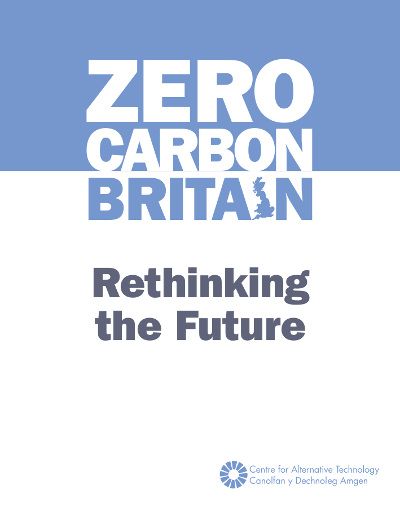
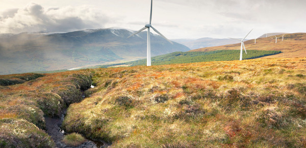

DIFFERENT USES OF ENERGY IN CONTEXT
In order to make sense of what a kWh of electricity is its useful to compare the amount of energy used for different activities. The following outlines a number of common uses of energy to put their use in context. Also included are several examples of what low energy technology can achieve:
ENERGY SCENARIO: ZERO CARBON BRITAIN

The ZeroCarbonBritain report by the Center for Alternative Technology shows how it is technically possible to achieve a zero carbon energy system in the UK through both new efficient buildings, existing buildings retrofit, electrification of transport, land use changes and powering up with renewable energy combined with storage and biomass based backup technologies to balance supply with demand. The following section summarises the main demand and supply side changes proposed in the ZeroCarbonBritain scenario.
Also added is an outline of costs of making some of the changes in comparison with what we might spend on energy if we made no changes. All of these figures are constantly changing as the costs of renewable and energy efficiency technologies fall and there is always a difficulty in forecasting energy costs into the future. The important thing is not the precise cost but the awareness of magnitude and the opportunity that presents from thinking what might we achieve if we redirect what we would spend otherwise towards the future we want.
AVERAGE HOME
The average UK home uses around
92 kWh of energy per day.
8 kWh/d for electricity,
41 kWh/d for water and space heating and
43 kWh/d for transport.
This translates to an average annual electricity bill of 3100 kWh costing £476, an average annual gas bill of 15000 kWh costing £714 and an average car fuel cost of £1312.
Over a 25 year timespan the average household spends £62,500 on energy.
A small village with 200 households will spend almost £12.5 million on energy over 25 years.
LAC: Lights, Appliances and Cooking
POWER DOWN
By insulating and making our buildings air-tight, heating with heatpumps, switching to efficient appliances, biking, walking more and switching to electric cars ZeroCarbonBritain outlines how we can reduce the amount of energy we need by about 80% down to
18 kWh per day
POWER DOWN: SPACE HEATING
The energy required to heat our homes can be reduced significantly with better building fabric and heating controls.
An average UK house
27.8 kWh/d
Insulate walls, roof and floor
Better windows and doors
16.7 kWh/d
Reduce draughts and air leakage
13.9 kWh/d
Better controls
and lower internal temperatures
11.1 kWh/d
Note: kWh/d values are delivered heat rather than fuel input. Gas and other boilers are not 100% efficient. The difference between 34.8 kWh/d and 27.8 kWh/d is the energy lost out of the boiler flue.
POWER DOWN: HEATPUMPS
Heatpumps can be used to provide heat efficiently from renewable electricity, providing 3 units of heat output for every unit of electricity input.
Total space heating and water heating demand
17.4 kWh/d
Total heatpump electricity input at a COP of 2.5
7.0 kWh/d
Note: An average COP of 2.5 includes 10% direct electric heating
POWER DOWN: TRANSPORT
11,300 miles/yr
The number of miles travelled by the average household by all means
7,900 miles/yr
The number of miles travelled by the average household by car
5.4 kWh/d
The amount of electricity required to drive 7,900 miles/yr in an electric car. Electric cars can travel 4.0 miles/kWh, a 75% energy saving compared to internal combustion.
If we simultaneously make our cities and towns more cycle and walking friendly, improve public transport, increase average car occupancy from 1.6 to 2.0 as the ZeroCarbonBritain suggests, reducing car use to 6100 miles per household and switch from flights to electric trains, this could reduce the energy required for personal transport down to 6.8 kWh/d.
POWER UP: SOLAR PV

1 kWp of solar can generate 870 kWh per year in the UK or 2.4 kWh/d
4 kWp of solar currently costs around £6500 to install in the UK (£1625/kWp). Over 25 years 1 kWp of solar will generate electricity at a cost of 7.5p/kWh.
Generating 17.7 kWh/d from solar would cost about £12,000 or only
19% of our budget.
Solar generates about 5x more electricity in June compared to December, whereas demand is higher in winter. With smart charging of electric cars and a small heat store for hot water solar alone in the above case could meet about 50% of demand.
POWER UP: COMMUNITY WIND

A 1 MW wind turbine at a capacity factor of 40% would generate 9600 kWh per day enough for 542 of our households above. A 1 kWp share would generate 9.6 kWh/day.
Operating for 20 years such a turbine costs about £3 million per MW (£3000/kWp). Even though the project cost is almost twice that of solar, the higher capacity factor will mean the wind turbine will generate over 3 times as much energy resulting in a lower electricity cost of 4.5p/kWh. It will also generate electricity more consistently and at more useful times of the year when demand is highest.
Generating 17.7 kWh/d from wind would cost about £5,530 or only 8% of our budget.
Wind power is more consistent than solar with a higher capacity factor and better matching with winter heat demand. A share of a wind turbine generating 17.7 kWh/d would meet 75% of the demand.
MATCHING SUPPLY WITH DEMAND
To match 100% of the demand with a zero carbon renewable energy supply scenario's such as ZeroCarbonBritain use a degree of over supply as well as a mix of renewable sources that complement each other.

With an equal amount of solar and wind capacity and a 20% oversupply its possible to meet up to 92% of demand directly in a household only energy model. In ZeroCarbonBritain there are additional flexible demands which can raise this matching level even higher.
The final 5-10% can be supplied from a backup source such as renewably produced synthetic methane ran through conventional gas power stations.